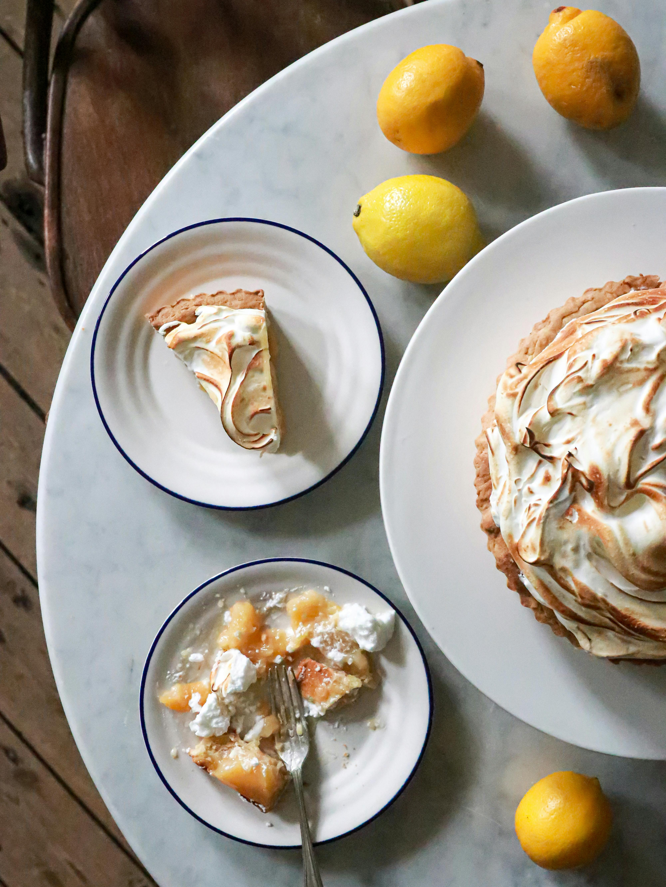

Lemon Pie

Description
This lemon meringue pie is so delicious and perfect for sharing! The sweet and tart
lemon filling is thickened with cornstarch, flour, and egg yolks.
Submitted by Emilie S
Ingredients
Filling:
- 1 cup white sugar
- 2 tablespoons all-purpose flour
- 3 tablespoons cornstarch
- 1/4 teaspoon salt
- 1 1/2 cups water
- 2 lemons, juiced, and zested
- 2 tablespoons butter
- 4 eggs yolks, beaten
- 1 (9 inch) pie crust, baked
Meringue:
- 4 egg whites
- 1/2 cup white sugar
Steps
-
Gather all ingredients and
preheat the oven to 325 degrees F (162 degrees C).
-
To make the filling: Whisk 1 cup sugar,
flour, cornstarch, and salt together in a medium saucepan; stir in water, lemon juice,
and lemon zest. Cook over medium-high heat, stirring frequently,
until mixture comes to a boil. Stir in butter.
-
Place egg yolks in a small bowl and gradually
whisk in 1/2 cup of hot sugar mixture.
-
Whisk egg yolk mixture back into
remaining sugar mixture. Bring to a boil
and continue to cook while stirring constantly
until thick. Remove from
heat; pour filling into baked pastry shell.
-
To make the meringue: Beat egg whites in a
glass, metal, or ceramic bowl with an electric mixer until foamy. Gradually add sugar,
continuing to beat until stiff peaks form.
-
Spread meringue over pie filling, sealing the edges at the crust.
-
Bake in preheated oven until meringue is golden brown, about 20 to 25 minutes.
-
Serve and enjoy!